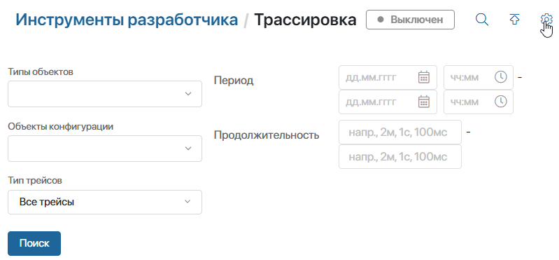
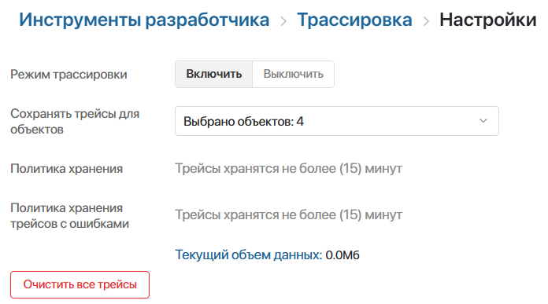
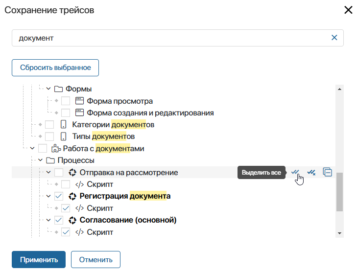
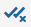
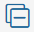
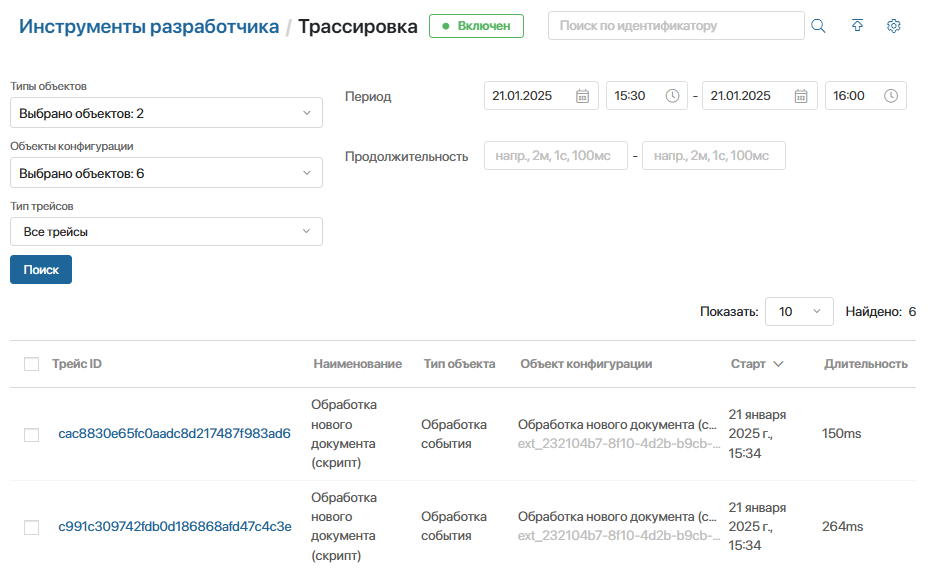
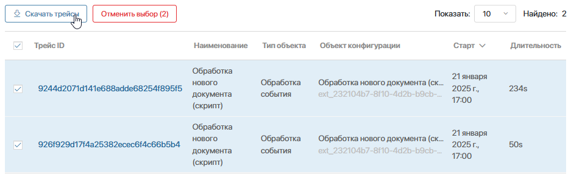
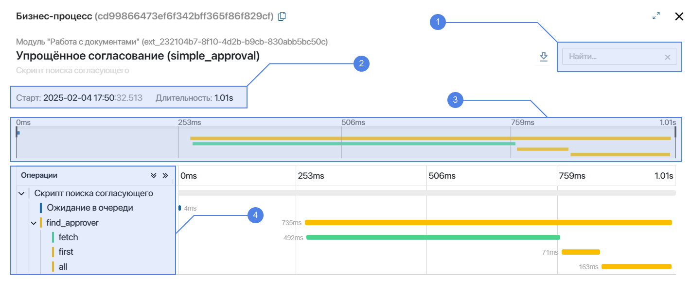
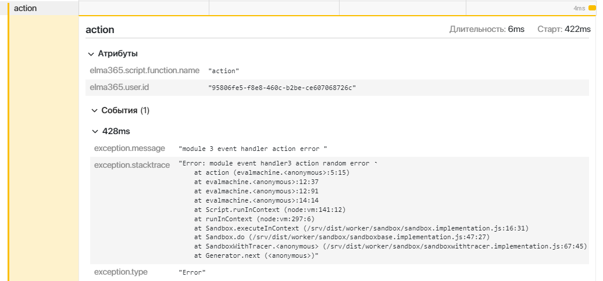

Инструмент Трассировка позволяет анализировать выполнение серверных скриптов, чтобы выявить причины задержек и устранить сбои. С его помощью в системе происходит сбор данных о порядке вызова функций, времени исполнения каждого действия и возникших ошибках.
Данные сохраняются в виде трейсов — записей, в карточках которых можно ознакомиться с диаграммой пользовательского запроса и информацией о каждом его шаге. Все трейсы сохраняются в разделе Администрирование > Инструменты разработчика. Кроме того, информацию можно посмотреть в компоненте, по которому зафиксирован трейс.
Сбор данных доступен по серверным скриптам:
- методов API в модулях;
- действий в БП;
- обработчиков событий;
- бизнес-процессов;
- виджетов.
Чтобы оптимизировать процесс сбора данных, вы можете выбрать, по каким компонентам системы включить трассировку. Например, собирать данные только по скриптам решения, над которым сейчас работаете.
Трейсы хранятся в системе в течение ограниченного срока. Вы можете экспортировать их, например, чтобы передать информацию об ошибке другому специалисту. Затем их можно повторно загрузить в ELMA365 для изучения.
Как использовать трассировку
Вы можете применять трассировку в следующих случаях:
- чтобы узнать подробности возникшей ошибки и настроить её обработку;
- чтобы устранить причины медленного выполнения определённых участков скрипта и оптимизировать работу пользователей;
- чтобы оценить эффективность изменений после доработки решения.
Рассмотрим, как использовать результаты трассировки, на примере оптимизации скриптов пользовательского бизнес‑процесса:
- Включите трассировку и добавьте бизнес-процесс в список отслеживаемых компонентов.
- Получите данные для анализа. Для этого можно использовать скрипты, имитирующие взаимодействие пользователей с процессом, или отслеживать реальную работу сотрудников.
- Проанализируйте данные трейсов. Обратите внимание на шаги, выполнение которых постоянно занимает длительное время, а также на повторяющиеся ошибки. Вы можете экспортировать трейсы, чтобы вернуться к их анализу позже.
- Внесите улучшения в скрипты процесса.
- Повторите шаги 1–3, чтобы снова проверить скорость выполнения скриптов и убедиться, что ошибки устранены.
- После завершения оптимизации можно прекратить сбор данных по бизнес-процессу, чтобы трейсы не занимали место на диске. Для этого исключите процесс из списка компонентов для отслеживания.
Включить и настроить трассировку
начало внимание
Настройка трассировки доступна только пользователям, входящим в группу Администраторы.
конец внимание
Чтобы использовать трассировку:
- Перейдите в раздел Администрирование > Инструменты разработчика и в блоке Инструменты выберите Трассировка.
- В правом верхнем углу страницы нажмите значок шестерёнки.

- На странице настроек включите режим трассировки.

- Укажите, в рамках каких компонентов системы нужно отслеживать выполнение серверных скриптов: выберите решения, модули, разделы, а также отдельные их компоненты — бизнес‑процессы, виджеты, скрипты и т. д.
Для этого в поле Сохранять трейсы для объектов нажмите на выпадающее меню и установите флажок напротив компонентов в списке. При этом вы можете:

- использовать поиск по названию;
- выполнять действия с вложенными компонентами:
- — выделить все компоненты;
-  — отменить выделение;
-  — свернуть список компонентов;
- — развернуть список.
- сбросить список выбранных компонентов.
- После указания компонентов для трассировки нажмите Применить.
- На странице настроек в полях Политика хранения и Политика хранения трейсов с ошибками указывается срок, после которого записи удаляются из системы:
- для ELMA365 SaaS — установлен срок 15 минут. Его нельзя изменить;
- для ELMA365 On-Premises — по умолчанию задан срок 10 дней. Это максимальное значение, его можно уменьшить.
- Также на странице настроек можно узнать объём сохранённых данных и освободить место на диске, нажав Очистить все трейсы.
После включения трассировки вы увидите:
- все сохранённые трейсы на странице Трассировка;
- трейсы по определённому компоненту:
- по экземпляру бизнес-процесса — в его карточке, нажав на верхней панели значок
 ;
; - по действию в БП — перейдя на странице управления модулем на вкладку Действия в БП и открыв действие;
- по обработчику событий — перейдя на странице управления модулем на вкладку Обработка событий и открыв обработчик;
- по методу API в модуле — перейдя на странице управления модулем на вкладку Методы API и нажав напротив метода значок ;
- по виджету — из отчёта Инструменты разработчика, нажав Перейти в трейс.
- по экземпляру бизнес-процесса — в его карточке, нажав на верхней панели значок
Обратите внимание, трейс фиксируется в системе и отображается с задержкой около 1 минуты после выполнения скрипта.
Работа со страницей «Трассировка»
В разделе Администрирование > Инструменты разработчика на странице Трассировка можно открыть трейсы для просмотра, а также экспортировать их, чтобы вернуться к анализу данных позже.
Поиск трейсов
Чтобы найти нужную запись, можно использовать:

- Поиск по идентификатору трейса — нажмите в правом верхнем углу страницы значок лупы, вставьте идентификатор в появившееся поле и нажмите Enter. Откроется карточка трейса.
- Фильтры — укажите параметры для поиска трейсов:
- Типы объектов — укажите, по каким типам компонентов отобразить записи: методам API, действиям в бизнес‑процессах, обработчикам событий, бизнес‑процессам, виджетам;
- Объекты конфигурации — выберите определённые компоненты системы, по которым нужно отобразить трейсы;
- Тип трейсов — выберите, какие записи отобразить на странице: все или только с ошибками;
- Период — задайте временной промежуток, к которому относятся записи. В списке отобразятся все трейсы, в которых хотя бы один шаг выполнялся в течение выбранного периода;
- Продолжительность — введите длительность отслеживаемого действия в минутах, секундах и миллисекундах, например, не менее 30с и не более 1м.
Чтобы увидеть записи, подходящие под заданные условия, нажмите Поиск. Затем выберите в списке запись, чтобы открыть карточку трейса.
Экспорт трейсов
Вы можете сохранять трейсы на ПК. Это позволяет повторно посмотреть определённую ошибку, даже если запись удалена со страницы Трассировка, или передать данные для анализа другому специалисту.
Экспортировать можно:
- определённый трейс, открыв его карточку и нажав значок ;
- несколько трейсов одним архивом. Для этого:
- Откройте страницу Трассировка и установите флажок напротив нужных записей в списке.
- Нажмите Скачать трейсы.

- Сохраните сформированный .zip-архив с .json-файлом трейсов на компьютер.
Импорт трейсов
Загрузите в ELMA365 экспортированные трейсы, чтобы повторно открыть их карточки. Обратите внимание, трейсы импортируются только для просмотра и не сохраняются в системе.
Для этого:
- На странице Трассировка нажмите в правом верхнем углу значок .
- В открывшемся окне выберите архив формата .zip или .json-файл с трейсами.
После завершения импорта откроется список записей, который выглядит так же, как на странице Трассировка. Чтобы посмотреть данные трейса, нажмите на его название.
Карточка трейса
Открыв трейс, вы увидите диаграмму, на которой отображаются шаги выполнения скрипта. Все действия и вызванные функции показаны в виде цветных отрезков с сохранением вложенности.
Вы можете проанализировать длительность выполнения каждого запроса, а также изучить ошибки, используя информацию в карточке:

- Строка поиска — поиск выполняется по всем полям трейса. Например, укажите название функции, чтобы узнать длительность запроса, или введите текст ошибки, чтобы найти шаг, на котором она произошла.
- Старт и длительность — дата и время, когда скрипт начал выполняться, а также продолжительность выполнения в секундах.
- Карта трейса — выделите промежуток на временной шкале, чтобы на диаграмме отобразились только входящие в него действия. Это позволит детально изучить определённый участок скрипта.
- Операции — дерево всех выполненных действий. Нажмите на название шага, чтобы посмотреть подробную информацию: атрибуты функции, произошедшие события и ошибки. Данные отобразятся под диаграммой и могут выглядеть так:

В карточке трейса также можно:
- скопировать ссылку на трейс, нажав рядом с его идентификатором значок . По ссылке запись может открыть любой сотрудник, даже если он не входит в группу Администраторы;
- сохранить трейс на компьютер в виде архива с .json-файлом, нажав рядом со строкой поиска . После этого запись можно импортировать в ELMA365 для повторного просмотра, даже если она удалена из системы.